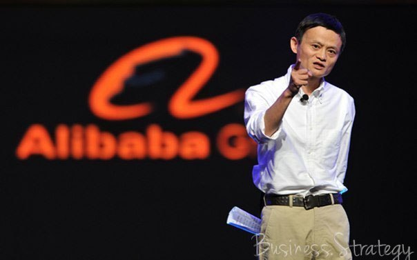

49-летний Джек Ма, самый богатый человек в Китае даёт полезные советы.

Если на совещании 90% присутствующих голосуют «за» то или иное предложение, я выбрасываю его в корзину. Причина проста: если все эти люди так явно видят эту возможность, то скорее всего над этим работает много других компаний, и нам не будет принадлежать лидерство в этом.
Джек Ма: Ошибки, о которых я жалею
В 2001 я допустил ошибку. Я объяснил своим сотрудникам, с которым основал компанию, что карьерный предел в компании для них — уровень менеджеров. Для того, чтобы нанять топ-менеджеров уровня вице-президента и выше, я думал, что мне нужно найти профессионалов со стороны. Спустя годы, никто из этих нанятых профессионалов в компании больше не работает, зато те, в ком я сомневался, прекрасно выполняют роли вице-президентов и даже выше. У меня есть принцип, которым я руководствуюсь: твое отношение к работе и решения, которые ты принимаешь, важнее, чем твои способности. Ты не можешь заставить всех думать одинаково, но ты можешь заставить всех верить в одну общую цель Даже не пытайтесь заставить своих сотрудников думать одинаково, это невозможно. Треть людей, которые на вас работают, не верят вам. Не позволяйте им работать «на личность». Вместо этого, сплотите их вокруг одной общей цели. Гораздо легче объединить людей вокруг общей идеи, чем вокруг одного лидера, каким бы невероятным он ни был.Чем лидер компании отличается от сотрудника?
Глава компании никогда не должен сравнивать свои технические навыки с умениями сотрудников. Технические навыки сотрудников всегда должны быть лучше, чем ваши. Иначе вы наняли не тех людей.Тогда чем лидер отличается?
• У главы компании должно быть видение развития компании на много лет вперед.• Лидер должен обладать твердостью характера и упорством, для того, чтобы выдержать то, что не под силу обычным сотрудникам.
• Он должен обладать недюжинными способностями выносить удары судьбы и переживать неизбежные провалы.
• Следовательно, хорошего лидера отличает наличие видения, упорства и характера.
Не занимайтесь политикой
Политика и деньги редко могут находиться в одних руках. Если вы пошли в политику, забудьте про бизнес. И наоборот. Когда деньги встречаются с политикой, это равнозначно тому, что спичка встречает динамит — жди взрыва.4 вопроса к современным молодым людям
• Что такое настоящий провал? Настоящий провал это прекращение борьбы.• Что такое гибкость? Вы поймете, что такое гибкость, когда переживете неудачи, тяжелые жизненные ситуации и разочарования.
• В чем ваши обязанности? Ваши обязанности в том, чтобы быть более прилежными, больше работать и иметь больше амбиций, чем другие.
• Только глупцы используют рот для того, чтобы говорить. Умный говорит головой, мудрый - сердцем.
Мы здесь для того, чтобы жить в полную силу
Я всегда говорю себе, что мы рождены не для работы, а для того, чтобы наслаждаться жизнью. Для того, чтобы делать жизнь других людей лучше, а не для того, чтобы проводить все время в работе. Если вы тратите все время на работу, рано или поздно вы пожалеете об этом.Про конкурентов и конкуренцию
• Только глупцы относятся к конкурентам с агрессией.• Если вы относитесь ко всем вокруг как к врагам, то они и будут вашими врагами.
• Когда вы конкурируете друг с другом, избегайте ненависти, она вас погубит.
• Конкуренция это как игра в шахматы. Если вы проиграли, всегда можно сыграть еще один раунд. Драться необязательно.
• У настоящего предпринимателя нет врагов. Как только вы это поймете, вас никто не остановит.
Про нытьё и жалобы
Если вы иногда позволяете себе поныть, в этом нет ничего страшного. Если вы впадаете в депрессию регулярно и часто жалуетесь на жизнь, то это становится похоже на алкоголизм — чем больше вы пьете, тем сложнее остановиться. На вашем пути к успеху вы заметите, что успешные люди не жалуются и не ноют. Миру наплевать на то, что вы скажете, важно то, что вы сделаете.Про советы предпринимателям
• Настоящие возможности лежат там, где их никто не видит.• Старайтесь, чтобы ваши сотрудники приходили на работу с радостью.
• Номер один это клиенты. Номер два — сотрудники. И только потом, под номером три — акционеры.
• Начинайте адаптироваться к новым условиям до того, как их заметили другие.
• Забудьте про деньги и про то, как вы будете их зарабатывать.
• Вместо того, чтобы внедрять какие-то мелкие фишки и трюки, сфокусируйтесь на стабильности и долгосрочных планах.
• Ваше отношение определяет то, как далеко вы пойдете.
Про предпринимательство
• Часто бывает так, что хорошую возможность сложно объяснить понятно. То, что можно просто и легко объяснить, как правило, не является хорошей возможностью.• В качестве партнера вы должны найти кого-то, кто дополняет ваши умения. Вам не обязательно нужен кто-то успешный.
• Ищите правильных людей, а не лучших людей.
• Самое ненадежное в этом мире — это отношения между людьми.
• «Бесплатно» — очень дорогое слово.
• Сегодня будет непросто, завтра будет еще хуже, но послезавтра все будет прекрасно.
Чего нельзя делать
• Самые плохие качества для предпринимателя: быть снобом, не уметь адекватно оценивать обстановку, взять высокий темп и не иметь возможности его поддерживать, не обладать умением смотреть вперед.• Если вы не знаете все про ваших конкурентов, или вы недооцениваете их, или вы не видите в них угрозу, то вы обязательно проиграете.
• Если ваш конкурент меньше вас, или слишком слаб, вы все равно должны относиться к нему, как к равному. Аналогично, если ваш конкурент гораздо больше вас, не бойтесь его.
Про свой бизнес
• Когда вы начинаете свой бизнес, это означает, что вы отказываетесь от стабильного дохода, больничных и годовых бонусов.• С другой стороны, это означает, что ваши доходы не ограничены ничем, что вы будете более эффективно использовать свое время и вам не придется просить разрешения у других людей.
• Если ваши решения будут отличаться от решений ваших сверстников, то и ваша жизнь будет отличаться, в ту или иную сторону.